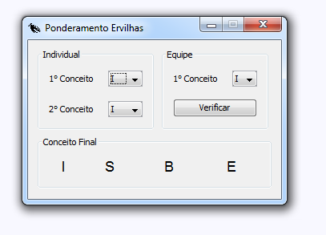

|

|
Antes de tudo, é preciso entender que o aplicativo ainda se encontra em fase beta,
isto é, o conceito de como deveria ficar o aplicativo se encontra bastante intuítivo e terminado. Entretanto,
quais quer erros ou 'bugs' encontrados no sistema podem ser reportados aos desenvolvedores.
Este sistema foi desenvolvido com o fim de ajudar principalmente os chamados "Primeiros anos",
pois como muitos já sabem, o colegio SESI tem por característica a apresentação de conceitos,
diferentemente de outras instituições de ensino, que qualificam o aprendizado do aluno por meio de notas numerais.
Os desenvolvedores do "Ponderação Ervilha" chegaram a conclusão de que muitos que entram no colégio, não
conseguem ponderar suas notas corretamente, daí a ideia de um aplicativo que ajudasse neste ato de calcular a nota.
|